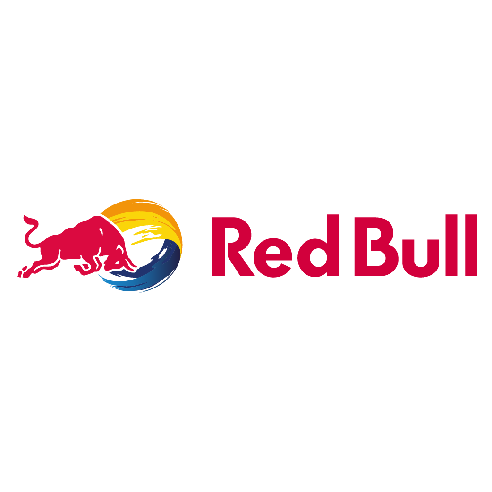
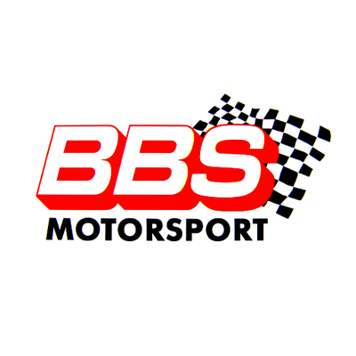
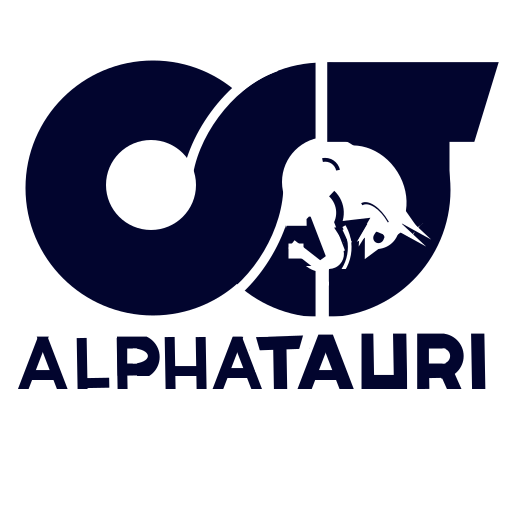

Powered




(also known as Formula 1 or F1) The world’s most prestigious motor racing competition, Formula One World Championship™ runs from March to December and spans 21 races in 21 countries across four continents.
The fan favorite documentary series produced in a collaboration between Netflix and Formula One to give a behind-the-scenes look at the drivers and races of the Formula One World Championship.
The Season 4 Formula 1 begins at the Bahrain Grand Prix, where drivers give it everything to take the first checkered flag of the year.
Formula E, officially the ABB FIA Formula E World Championship, is a single-seater motorsport championship for electric cars. The series was conceived in 2011 in Paris by FIA president Jean Todt and Spanish businessman Alejandro Agag, who is also the current chairman of Formula E Holdings.
Mercedes boss Toto Wolff hopes his team will be able to challenge Ferrari and Red Bull for wins in the second half of the season which starts this weekend with the Belgian Grand Price.
With the reliability of the Ferrari-powered cars being one of the subplots of the season, several drivers find themselves on the edge of taking more grid penalties.
Max Verstappen might only be 24 years old, but the Dutchman already looks to be on course for a second World Championship. According to former F1 driver Pedro de la Rosa
The French Grand Prix will indeed be absent from the 2023 Formula 1 calendar, confirms Stefano Domenicali. That of Belgium could suffer the same fate.
German manufacturer Audi will join the Formula 1 World Championship from the 2026 season as a power unit supplier. It comes after new power unit regulations, designed specifically to make it possible and attractive for newcomers to join the sport at a competitive level, were published earlier this month.
Read MoreGeorge Russell not only claimed his first F1 pole on Saturday, but he led the first half of the Hungarian Grand Prix with an air of self-assurance, soaking up the pressure in a fine battle with the faster Ferrari of Charles Leclerc, before finally succumbing and get left behind.
Read MoreMcLaren and Ricciardo last week confirmed a 'mutual termination' of his contract at the end of the 2022 season; the former Red Bull's F1 future is in doubt; Christian Horner also offers opinion on Oscar Piastri saga.
Read MoreDaniel Ricciardo will leave McLaren at the end of the season after he and the team agreed a mutual early termination of his contract. Confirmation of the early split opens the door for Oscar Piastri to join the Woking team, although Alpine are still adamant they have a contract for their wantaway youngster to stay.
Read More